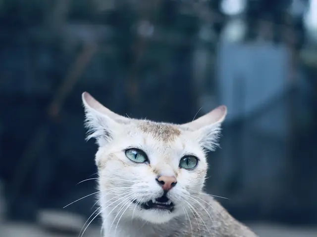

Carteirinha de vacinas
Quando é a próxima dose?
Registre a última aplicação. A página soma o intervalo, mostra o status e gera lembretes para o seu calendário.

Intervalos usados
São os intervalos comuns de calendário, só para lembrar. Quem define o esquema do seu bicho é o veterinário.
- V10, antirrábica e gripe canina: 365 dias
- Vermífugo: 90 dias
- Antipulgas: 30 dias